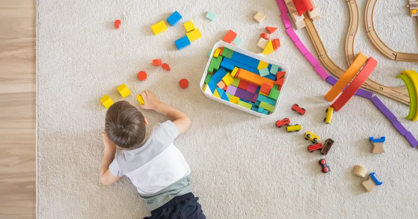
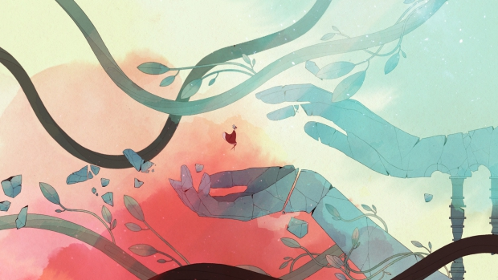
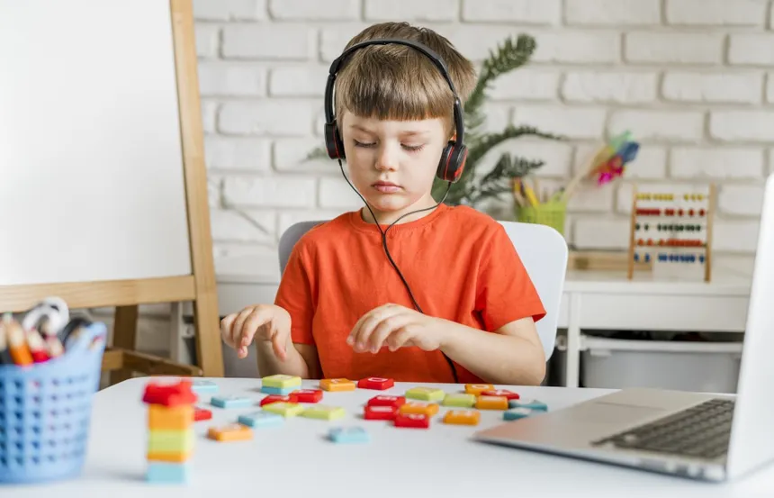

Desenvolvimento Cognitivo

Diversas revisões científicas mostram que jogar videogames de forma regular está associado a ganhos mensuráveis em funções cognitivas específicas, memória operacional, atenção seletiva e controle inibitório, um conjunto que a neuropsicologia chama de funções executivas. Pesquisas brasileiras, como as conduzidas no Laboratório de Pesquisa e Extensão em Jogos Cognitivos (LabLudens) da UFSC, investigam justamente como esses jogos podem ser usados para estimular o controle inibitório e a competência emocional em crianças
Lazer e regulação emocional
Assim como o Celeste, Gris é um jogo indie e que leva o meio dos jogos a um patamar artístico incrível. Uma das interpretações mais populares, é de que Gris fala sobre o luto e seus estágios, se baseando em um modelo proposto pela psiquiatra Elizabeth Kübler-Ross de 5 estágios (negação, raiva, barganha, depressão, aceitação), contudo, esse modelo é dado como datado e não muito usado por estudos da área. Neste jogo, não há diálogos, apenas cores, e a cada cor adicionada, uma nova etapa do processo de luto é expressa com várias metáforas, por exemplo, durante certos momentos da gameplay, uma massa preta e disforme persegue o jogador, representando a tristeza, raiva ou qualquer outro sentimento ruim que nos persegue durante o luto

Educação

A gamificação aplica elementos típicos de jogos: pontos, níveis, desafios progressivos e recompensas a contextos de ensino, deslocando a motivação de uma nota final para a satisfação de superar um desafio. Segundo o pesquisador Karl Kapp, essa lógica é especialmente eficaz em áreas como ciências e programação, onde resolver problemas e experimentar soluções já fazem parte do processo natural de aprendizagem. Estudos sobre o tema indicam resultados consistentes de engajamento e retenção de conteúdo em diferentes níveis de ensino, o que vem popularizando o formato em salas de aula brasileiras.